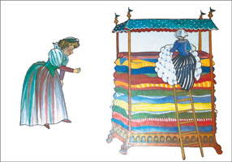

Drottningen följde med betjänten ut i hallen och där stod en ledsen flicka, som undrade om hon kunde få ligga över på slottet en natt. Hon berättade att hon hade gått vilse när det hemska ovädret hade brutit ut.
Drottningen frågade henne om hon verkligen var en riktig prinsessa.
Vilket flickan lovade att hon var.
Drottningen lovade henne att hon skulle få stanna över natten, men först skulle hon få torra kläder och något att äta.
Drottningen gick själv för att göra i ordning gästrummet. Hon bad tjänarna hämta tjugo madrasser och tjugo bolstrar.
Sedan bäddade hon själv sängen, men allra underst la hon en liten ärta.